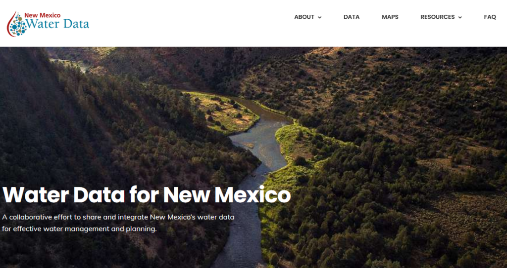
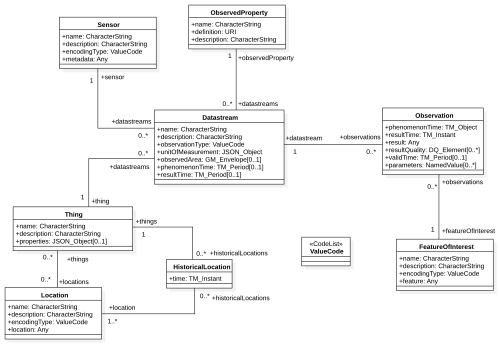
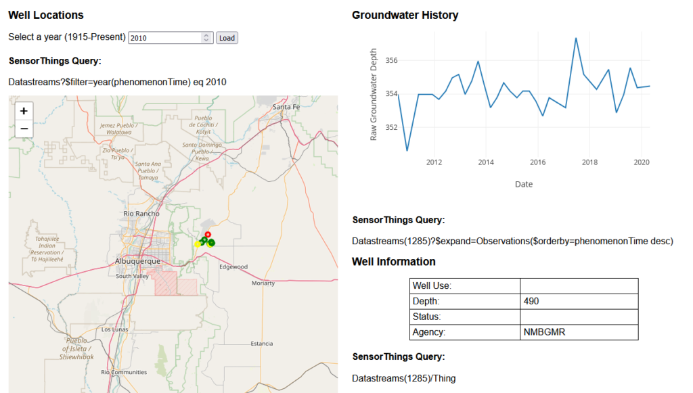

Published: Thu 07 July 2022
By Chris Cox
In data analysis .
tags: sensorthings
The mean annual precipitation in NM is about 14 inches which makes it one the driest states in the US. Almost the entire Western US is much drier than the Eastern US, and climate change is likely to make things worse. Water management is therefore critical, and I recently starting interacting with the New Mexico Water Data Initiative (NMWDI). Created as part of NM House Bill 651 (2019), the NMWDI is managed by the NM Bureau of Geology and Mineral Resources with the mission of developing a hub for NM water data to facilitate data discovery and access.

NM Water Data Website
The types of data accessible via NM Water Data range from climate, to groundwater, to water quality. Much of the data is provided by State and Federal agencies like the NM State Engineer and the USGS, but there are also partnerships with various non-profits. In some cases, the data is available for direct download or there is a link to the data provider's website. Importantly, a subset of the data can be accessed programmatically via a “Sensor Things” API .
A SensorThings API follows a standardized approach to designing an API (described further below), and provides a powerful means for quickly accessing and manipulating data. However, I get the impression the SensorThings standard is not yet widely implemented, and it took some time for me to understand how it works. In this blog post I describe what the SensorThings API is, how it works, and how I utilized NMWDI's SensorThings API to create an app http://apps.crceanalytics.com/sensorthingsdemo (sorry, no longer active) that displays NM groundwater data.
What is an API?
API stands for “Application Programming Interface”. Computer programs use APIs to communicate and interact with other programs. I find the term API to be fairly vague, abstract, and seemingly applied to many different situations. However, it helps to think of it as being synonymous with a similar, perhaps more familiar acronym GUI (graphical user interface). A GUI is the buttons and controls that a user interacts with when running a computer program. With an API, the “user” is another program and the interface isn’t graphical, but might be a function or a message following a particular format.
A web API utilizes the internet as the means of communicating between programs, so the different programs do not need to be on the same computer. Much of the internet is structured with a client-server network, so one computer acts as a client and sends a request to a computer that acts as a server. To send a request, the program needs to know the server hostname and path to desired content. This is what your browser does to request a webpage, and the request information is shown in the URL. For example:
http://apps.crceanalystics.com/sensorthingsdemo/
http:///
The server responds to the request, typically, by returning data. Exactly what to send the server and how it will respond is what defines the API. The hostname and path to a particular API is known as the “endpoint”.
Web API’s often return data that follow a JSON format. JSON stands for Javascript Object Notation and is simply a way of formatting text so it is easier for computers to parse. While it was created in association with Javascript, it is easily parsed by other programming languages.
{"examplejson": [ 1, 2, 3 ]}
SensorThings API
Many of the API services I have utilized don’t follow a rigorous standard. In order to understand how to use such an API, the creator of the API must make instructions available somewhere. In contrast, NMWDI has elected to implement a “SensorThings ” API. This particular approach to structuring an API is defined by the Open Geospatial Consortium (OGC), an international standards organization for managing and sharing of geospatial data. The SensorThings standard was initially developed in 2015 and continues to be actively updated (see their Github page ). However, it does not yet appear to be widely adopted, with NMWDI being just the second US based organization shown on a "list of endpoints" .

Figure 1 : SensorThings Data Model (from Frost-server documentation)
SensorThings incorporates a “data model” into the API (figure 1) and understanding it is key to utilizing a SensorThings API. The data model describes how all data available from the API is organized and provides a map for accessing data of interest. The data model consists of various entities (like tables in a database) that store both field measurements as well as information about how the measurement was made. Entities include:
Things - any physical object
Locations - where the thing is located
Datastreams - data sets associated with things
Observations - Data values in data streams
Sensors - An instrument associated with a datastream
For example, a “thing” might be a weather station located in NM with various sensors. Datastreams could be temperature, humidity, and wind speed.
It is worth keeping in mind that the SensorThings standard just defines how the API should be structured and behave. The standard must be implemented in some sort of programming language, and it appears the only implementation, perhaps due to the complexity, is the “Frost server ”, written in Java, apparently by one of the primary authors of the standard itself.
Using the API - Demo App

Figure 2 - NMWDI SensorThings API Demo App
Working with SensorThings is somewhat analogous to interacting with a relational database where a query is sent as part of the client request. In general though, it is easiest to learn by manually sending requests to the API and assessing the response. I built a simple web application to demonstrate some basic interaction with the NM Water Data SensorThings API: http://apps.crceanalytics.com/sensorthingsdemo (No longer active). The app has three main features: a map showing well locations, a chart showing the time series of well data, and a table giving some details about a particular well (figure 2). Depending on the year, different wells are displayed on the map and different years can be selected. When a well is clicked on the observations are displayed in the chart and information about the well is loaded into the table. Next to each feature is the relevant SensorThings query that was used to load the data. To see the raw data from a query, simply copy the query and load it in a browser:
Example query: Datastreams(1285)/Thing
Full URL: https://st2.newmexicowaterdata.org/FROST-Server/v1.1/Datastreams(1285)/Thing
The code for the app is available on Github, and utilizes Leaflet for mapping and Plotly for plotting. The Javascript is mostly just sending a request and parsing the data that comes back so that it can be used in the map and/or plot functions.
Figure 3 - Code from sensorthings_map.js showing a request made to the NMWDI Sensorthings API
SensorThings API's have lots of sophisticated data search functionality. Surprisingly, I found basic data access to be the least intuitive (it is the least like interacting with a database). Accessing specific data can be best explained using examples. Here are some queries for location data:
Locations/ - All the locations associated with the dataLocation(1)/Things - All the things associated with location ID=1Location(1)/Observations - This will not work because the data model associates observations with Datastreams, not Locations
Once basic access of the data is understood, the more advanced functionality is easy to add on. For example, the default query to load wells to the map is: “ObservedProperties(1)?\\(expand=Datastreams(\\\) filter=year(phenomenonTime) eq 2022)”. There are sometimes multiple ways to get a particular dataset, and in this case I start with "ObservedProperties(1)" because this limits the data returned to be of type "Depth to water" (determined by trial and error). Then I use the \\(expand function, which sort of appends data on to an existing query, to get all Datastreams associated with "Depth to water". Finally, the \\\) filter function only returns data from wells in a particular year.
There is much more functionality than I have shown here including an ability to search for data using geospatial information. The most helpful examples I found are on the Frost Server documentation . Ironically, I found the official OGC documentation to be fairly unhelpful, as it is written in a very technical dry manner. Some other resources: